Do problema ao wireframe
Um diário social de filmes e séries que transforma avaliações em um mapa de gosto pessoal — e usa esse mapa para gerar descobertas mais relevantes. Este dossiê reúne a validação do problema, o público, as personas, a jornada, as user stories, a priorização do MVP e os wireframes.
01 — Validação do problema
Não falta conteúdo. Falta um filtro pessoal confiável.
O ponto de partida não é uma ideia de app, é um comportamento medido: o catálogo cresce, o tempo gasto decidindo cresce junto, e uma parcela relevante das pessoas simplesmente desiste da sessão.
As quatro dores
O histórico fica espalhado entre serviços, prints e conversas de WhatsApp. A pessoa não consegue responder "o que eu assisti em maio?".
Um "4 estrelas" não separa "roteiro fraco, atuação impecável" de "tudo mediano". Duas experiências opostas viram o mesmo número.
Rankings respondem "esse título é bom?", mas não "combina comigo, hoje, nesse humor?".
Ler qualquer discussão sobre um título recente é apostar. O custo é alto e irreversível.
Pessoas de 16 a 35 anos que assistem filmes e séries semanalmente perdem tempo decidindo o que assistir e perdem o registro do que já assistiram, porque as ferramentas disponíveis oferecem catálogo e nota média — mas não um retrato do gosto individual nem um caminho seguro para conversar sobre o que viram.
Por que o espaço existe
| Produto | Foco | Filmes | Séries | Avaliação multidimensional | Afinidade entre perfis | Descoberta por humor | Spoiler oculto por padrão |
|---|---|---|---|---|---|---|---|
| Letterboxd | Diário social de cinema | ✅ | — | — | — | — | parcial |
| IMDb | Base de dados e nota agregada | ✅ | ✅ | — | — | — | parcial |
| Trakt | Rastreamento de consumo | ✅ | ✅ | — | — | — | — |
| Serializd | Diário de séries | — | ✅ | — | — | — | parcial |
| JustWatch | Onde assistir | ✅ | ✅ | — | — | — | n/a |
| CinePulse | Diário social + descoberta por gosto | ✅ | ✅ | ✅ | ✅ | ✅ | ✅ |
O espaço vazio não é "mais um app de listas": é a combinação de filmes e séries no mesmo diário com descoberta guiada por gosto e humor. O crescimento do Letterboxd — 17 milhões de membros em jan/2025 com um produto essencialmente de diário e avaliação, e só de cinema — prova que existe apetite pelo comportamento.
02 — O que ainda não sabemos
Seis hipóteses, com critério de falseamento
Este projeto ainda não fez pesquisa primária. Em vez de apresentar suposição como fato, as afirmações sobre comportamento estão registradas como hipóteses — cada uma com o resultado que a derrubaria e a decisão de escopo correspondente.
| # | Hipótese | Confiança | Falseada se… | Decisão em caso de falha |
|---|---|---|---|---|
| H1 | "Não sei o que assistir" é dor recorrente e irritante | alta | menos de 50% citarem espontaneamente | Produto vira só diário |
| H2 | Querem registrar, mas desistem pelo esforço | média | mais de 60% já usarem solução satisfatória | Focar no social, não no registro |
| H3 | PulseScore por critérios é valor, não formulário | baixa | menos de 20% expandirem a seção opcional | PulseScore desce para P2 |
| H4 | PulseMatch aumenta a confiança na recomendação | média | preferirem a nota média ao percentual | Manter só a nota agregada |
| H5 | Filtrar por humor supera filtrar por gênero | média | uso do filtro de humor abaixo do de gênero | MoodTags voltam a ser só marcação |
| H6 | Spoiler oculto aumenta o engajamento com reviews | média | taxa de revelação abaixo de 30% | Rever o card, não o princípio |
É exatamente por isso que, no MVP, o PulseScore por critérios é opcional e fica recolhido atrás de um toque — decisão visível no wireframe WF-05. O desenho da interface é a forma de comprar a opção sem apostar o produto nela.
03 — Público e personas
Recorte comportamental, não demográfico
Idade e renda descrevem quem a pessoa é, mas não explicam por que ela usaria o app. O sinal mais forte de que alguém sente a dor é já ter tentado registrar o que assiste — e ter desistido.
Marina Costa
27 anos · analista de marketing · SPChega em casa às 20h cansada, rola a tela inicial por sete minutos, abre outro serviço, desiste e repete algo que já viu.
- Ranking genérico não combina com o humor do dia
- Recomendação de amigo morre no WhatsApp
- Pesquisar sobre um título é arriscar spoiler
houver formulário longo ou cadastro obrigatório antes de ver valor.
Lucas Andrade
20 anos · universitárioAssiste 3 a 5 títulos por semana. Termina um filme às 2h e quer dar a nota na hora. É a pessoa a quem os amigos perguntam o que assistir.
- Salva recomendação em três lugares e não acha depois
- Quer discutir o final sem estragar para os outros
o diário continuar vazio depois de duas semanas, ou se séries não forem cobertas.
Pedro Nakamura
24 anos · designer · escreve resenhasUsa Letterboxd para cinema, mas não tem nada consistente para séries. Produz o conteúdo que a Marina consome.
- Nota única achata a análise
- Precisa avisar sobre spoiler na mão, e nem sempre funciona
Um app com muitas Marinas e nenhum Pedro não tem reviews.
Assiste um filme a cada duas semanas, escolhe pela tela inicial do serviço e nunca comentou sobre um filme na internet. O CinePulse não desenha para ela: se uma funcionalidade só se justifica pelo perfil da Sandra, ela sai do escopo.
Princípios de UX — e o que cada um proíbe
| # | Princípio | O que isso proíbe |
|---|---|---|
| 1 | Registrar leva segundos | Qualquer campo obrigatório além da nota. Meta cronometrada: ≤ 20 s |
| 2 | Profundidade é sempre opcional | Bloquear o salvamento por PulseScore, MoodTag ou review |
| 3 | Spoiler só aparece por ação consciente | Exibir texto marcado em prévia, feed ou notificação |
| 4 | Filmes e séries convivem | Telas, abas ou fluxos separados por tipo de mídia |
| 5 | O casual e o crítico cabem no mesmo app | Linguagem que trate nota alta em blockbuster como gosto inferior |
| 6 | Todo número é explicável | Exibir PulseMatch ou recomendação sem mostrar a razão |
| 7 | O valor aparece antes do cadastro | Usar a tela de login como porta única de entrada |
04 — Jornada
O produto mora no vale da curva
O mapa segue a Marina da noite sem plano até o registro que melhora a próxima escolha. Ele tem dois pontos baixos — e são exatamente esses dois pontos que o MVP inteiro existe para atacar.
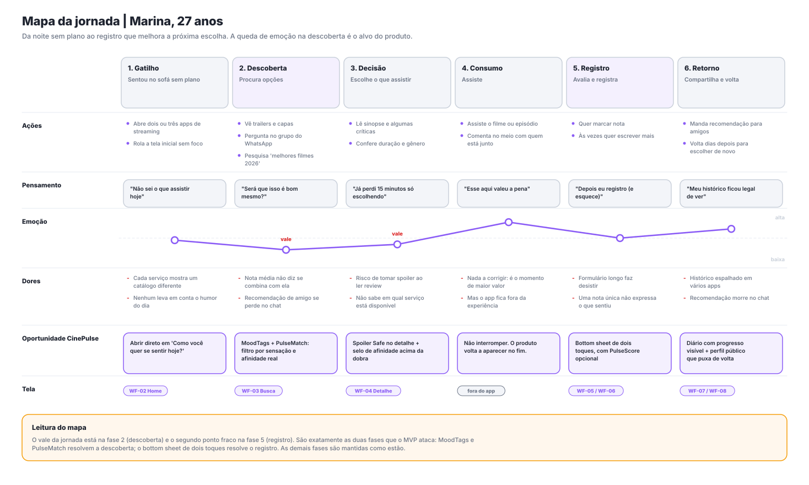
Nota média não diz se combina com ela; recomendação de amigo se perde no chat.
Resposta: MoodTags e PulseMatch.
Formulário longo faz desistir; nota única não expressa o que sentiu.
Resposta: bottom sheet de dois toques.
Toda funcionalidade P0 ou P1 precisa se justificar pela fase 2 ou pela fase 5. As demais fases da jornada são mantidas como estão — não é papel do MVP melhorar tudo.
05 — User stories
20 histórias, 7 épicos, critérios verificáveis
Cada história tem critérios de aceite escritos em dado / quando / então. Abaixo, as sete mais determinantes para o produto. A lista completa está em docs/03-mvp-e-requisitos.md.
Como Lucas, quero registrar um título com nota em poucos toques para não perder o histórico. Uma estrela e "Salvar" encerram a tarefa — exatamente dois toques. Nenhum campo além da nota pode bloquear o salvamento.
Como Marina, quero filtrar por sensação para decidir o que assistir agora sem saber o nome do título. Duas tags selecionadas filtram por interseção; tag com menos de 5 títulos não é oferecida.
Como Pedro, quero sinalizar spoiler para não estragar a experiência de ninguém. A review marcada aparece oculta em todos os lugares — detalhe, perfil, feed e notificação — e volta ao estado fechado ao sair da tela.
Como Marina, quero saber o quanto meu gosto combina com o de alguém. Com menos de 5 títulos em comum, o app mostra "poucos dados para comparar" — nunca um número inventado.
Como visitante, quero navegar e ler reviews antes de criar conta. Ao tentar avaliar ou salvar, o cadastro é oferecido naquele contexto e a ação é concluída automaticamente depois.
Como Lucas, quero corrigir uma nota que dei errado, porque avaliei com pressa. Uma UX que promete registro em 20 segundos assume que haverá erro.
Como Pedro, quero avaliar história, atuação, visual e trilha separadamente. Critério não preenchido não vira zero; a seção nasce recolhida e marcada como opcional.
06 — Priorização do MVP
RICE, com a linha de corte declarada
RICE = (Reach × Impact × Confidence) ÷ Effort. Reach e Impact são estimativas do time, não medições — o método serve para tornar a discussão explícita e comparável, não para produzir uma verdade.
| # | Funcionalidade | US | R | I | C | E | RICE | Faixa | |
|---|---|---|---|---|---|---|---|---|---|
| 1 | Marcar assistido + nota | US-08 | 90 | 3 | 100% | 2,0 | 135,0 | P0 | |
| 2 | Busca de filmes e séries | US-04 | 95 | 3 | 100% | 3,0 | 95,0 | P0 | |
| 3 | Detalhe do título | US-05 | 95 | 2 | 100% | 2,0 | 95,0 | P0 | |
| 4 | Watchlist | US-11 | 70 | 2 | 90% | 1,5 | 84,0 | P0 | |
| 5 | Diário | US-12 | 80 | 2 | 95% | 2,0 | 76,0 | P0 | |
| 6 | MoodTags na avaliação | US-17 | 55 | 2 | 70% | 1,5 | 51,3 | P0 ↑ | |
| 7 | Cadastro e login | US-01/02 | 100 | 1 | 100% | 2,0 | 50,0 | P0 | |
| 8 | Descoberta por MoodTag | US-06 | 50 | 3 | 60% | 2,5 | 36,0 | P0 ↑ | |
| 9 | Editar/excluir registro | US-14 | 35 | 1 | 100% | 1,0 | 35,0 | P0 ✚ | |
| 10 | Review + Spoiler Safe | US-10/13 | 45 | 2 | 80% | 2,5 | 28,8 | P0 | |
| 11 | Explorar sem conta | US-03 | 40 | 1 | 70% | 1,0 | 28,0 | P0 ✚ | |
| 12 | Perfil e mapa de gosto | US-18 | 60 | 1 | 90% | 2,0 | 27,0 | P0 | |
| linha de corte do MVP | |||||||||
| 13 | Perfil de outra pessoa | US-15 | 45 | 1 | 85% | 1,5 | 25,5 | P1 | |
| 14 | Seguir pessoas | US-19 | 45 | 1 | 80% | 1,5 | 24,0 | P1 | |
| 15 | Feed de amigos | US-07 | 45 | 2 | 60% | 3,0 | 18,0 | P1 | |
| 16 | Listas personalizadas | US-20 | 40 | 1 | 80% | 2,0 | 16,0 | P1 | |
| 17 | PulseMatch | US-16 | 40 | 3 | 50% | 4,0 | 15,0 | P1 ⚠ | |
| 18 | Onde assistir (integração) | — | 60 | 2 | 40% | 5,0 | 9,6 | P2 | |
| 19 | PulseScore por critérios | US-09 | 25 | 1 | 70% | 2,0 | 8,8 | P1 ⚠ | |
| 20 | Recomendação personalizada | — | 50 | 3 | 30% | 8,0 | 5,6 | P2 | |
| 21 | Gamificação / conquistas | — | 30 | 0,5 | 40% | 2,0 | 3,0 | P2 | |
| 22 | Listas colaborativas | — | 15 | 1 | 50% | 3,0 | 2,5 | P2 | |
Duas exceções estratégicas — declaradas, não escondidas
O RICE penaliza confiança baixa e esforço alto — as características de qualquer hipótese não testada. Mas um MVP só de P0 é um clone do Letterboxd com séries: entregaria um produto funcional e nenhum aprendizado. O esforço é contido usando fórmula determinística, não aprendizado de máquina.
Uso projetado baixo, mas é um dos quatro pilares da marca, reaproveita a mesma folha do US-08 e testa a hipótese H3 — a mais frágil do produto. Se o teste de usabilidade mostrar menos de 20% de abertura, desce para P2 sem drama.
O que mudou em relação à primeira versão do CP4
| # | Antes | Agora | Por quê |
|---|---|---|---|
| 1 | MoodTags eram P1 | MoodTags viram P0 | RICE 51,3 e 36,0 — acima de review+spoiler, que já era P0. É o recurso mais barato que ataca o vale 1 da jornada |
| 2 | "Explorar sem conta" não existia | Criado como P0 (US-03) | Cadastro obrigatório na porta contradiz o princípio nº 7 e é a principal causa de abandono em apps sociais novos |
| 3 | "Editar registro" não estava listado | Criado como P0 (US-14) | Registro em 20 segundos pressupõe erro; se corrigir for caro, o usuário passa a avaliar devagar |
PulseMatch v1 — determinístico e auditável
Por que 65% para concordância: assistir as mesmas coisas não é o mesmo que gostar das mesmas coisas. O peso maior fica em concordar sobre as notas — que é o que a pessoa quer saber ao pedir uma recomendação. Requisito de transparência: nenhuma versão futura pode exibir o percentual sem os três elementos do passo 5.
07 — Métricas
Uma métrica-guia, cinco de apoio
É a única métrica que só sobe quando o produto entrega valor dos dois lados: a pessoa está assistindo e registrando. Downloads e cadastros não medem nada disso.
Métricas por funcionalidade
| Funcionalidade | Métrica | Meta | Hipótese testada |
|---|---|---|---|
| Avaliação rápida (US-08) | tempo mediano até salvar | ≤ 20 s | — |
| Busca (US-04) | buscas que terminam em detalhe aberto | ≥ 60% | — |
| MoodTags (US-06/17) | usuários que usam ao menos uma vez | ≥ 30% | H5 |
| PulseScore (US-09) | usuários que expandem a seção opcional | ≥ 20% | H3 |
| Spoiler Safe (US-13) | reviews marcadas que são reveladas | ≥ 30% | H6 |
| PulseMatch (US-16) | usuários que abrem "títulos em comum" | ≥ 25% | H4 |
| Diário (US-12) | retorno ao diário em D7 | ≥ 35% | H2 |
08 — Arquitetura da informação
Quatro abas fixas, três telas sobrepostas
As cores no diagrama indicam a faixa de prioridade: verde = P0 (MVP), roxo = P1 (diferencial), cinza = P2 (futuro). Dá para ver, em uma imagem, o que existe no CP5 e o que fica para depois.
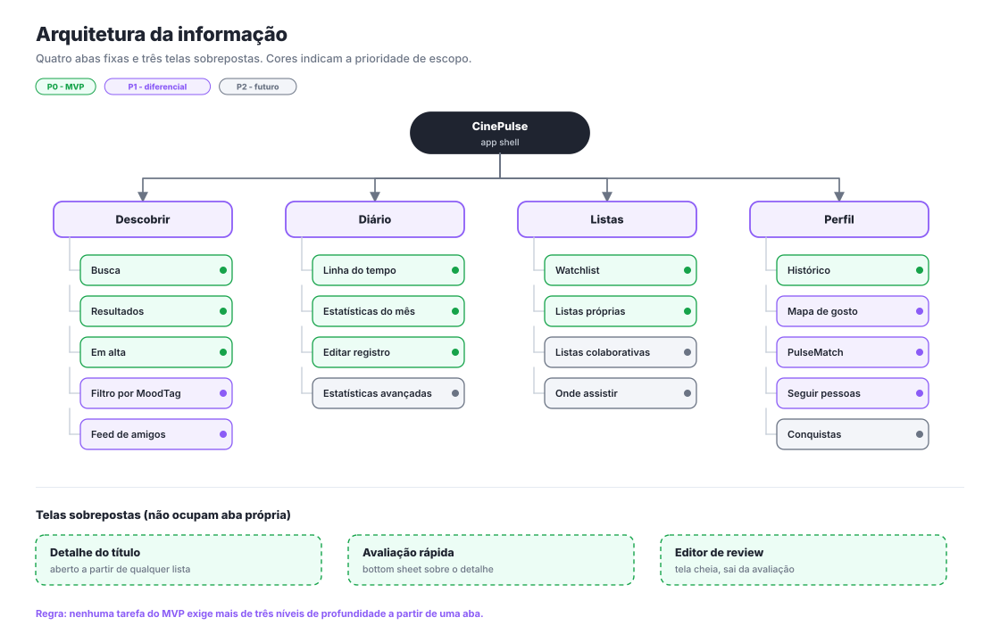
- Nenhuma tarefa do MVP exige mais de três níveis de profundidade a partir de uma aba.
- O detalhe do título é acessível de qualquer lista — busca, diário, watchlist, feed ou perfil de terceiro. Ele é o hub do produto.
- A avaliação nunca é uma tela nova: é uma folha por cima do contexto. Trocar de tela custaria o contexto do título.
- Filmes e séries não têm abas separadas.
- O botão + flutuante está em todas as abas: registrar é a ação de primeira classe do produto.
09 — Fluxo principal
Um ciclo, não uma linha
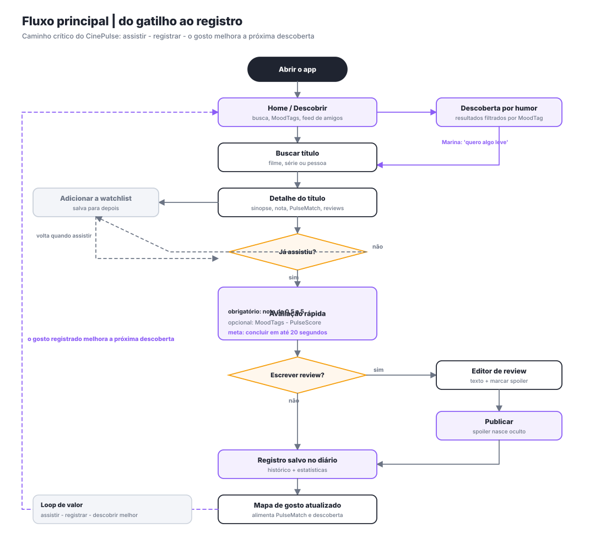
- É um ciclo. O último passo alimenta o primeiro. Um app de listas termina no arquivo; o CinePulse volta para a descoberta.
- O caminho crítico tem no máximo 5 passos do gatilho até o registro salvo.
- Tudo que é opcional está fora do caminho crítico. PulseScore, MoodTags e review são desvios, nunca pedágios.
10 — Wireframes
Oito telas, lo-fi e anotadas
Cinza, sem imagem real e sem tipografia de marca — de propósito. Wireframe responde "a estrutura está certa e a tarefa é curta?"; o mockup de alta fidelidade responde "está bonito e consistente?". Discutir cor antes de estrutura é a forma mais rápida de gastar tempo com a coisa errada. Cada número no desenho é uma decisão em revisão.
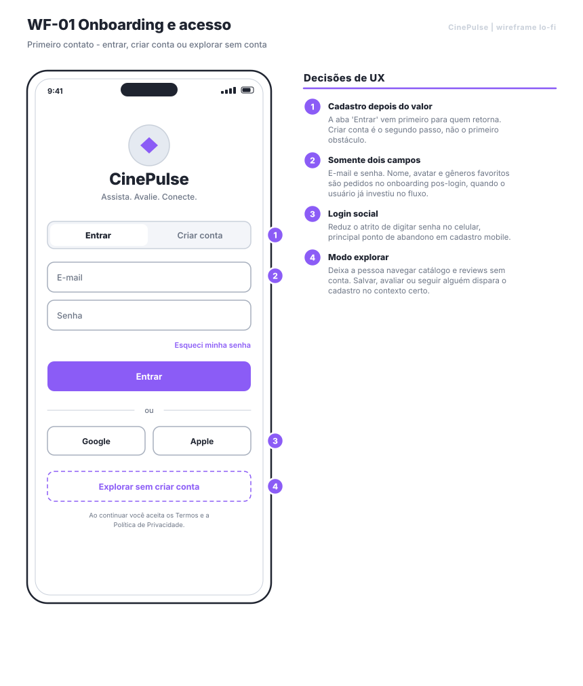
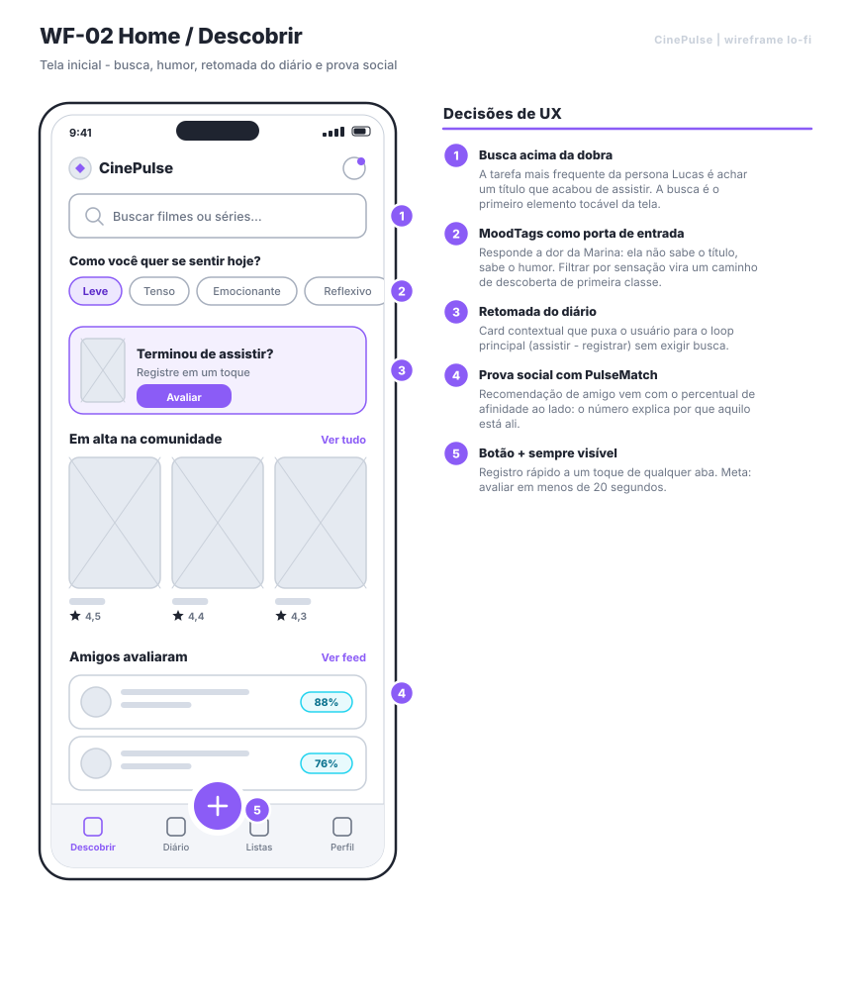
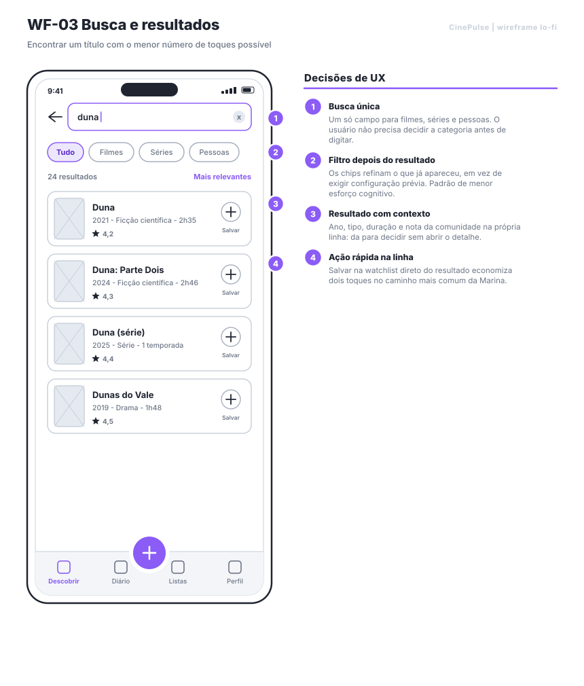
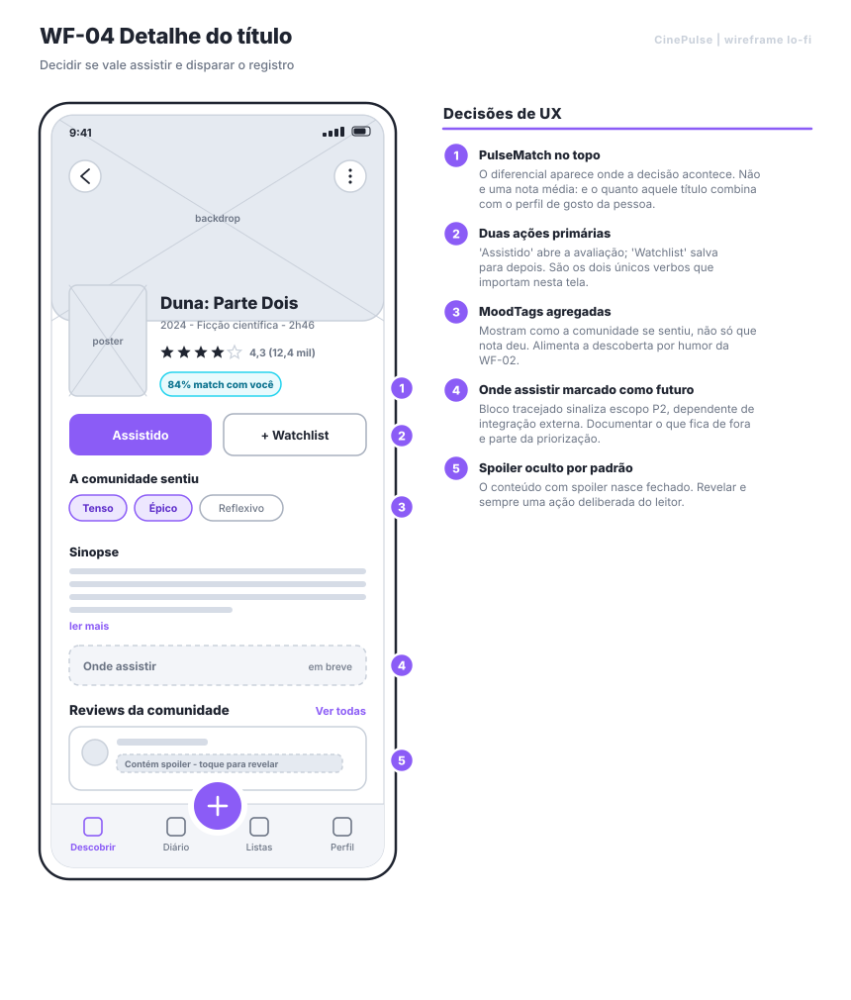
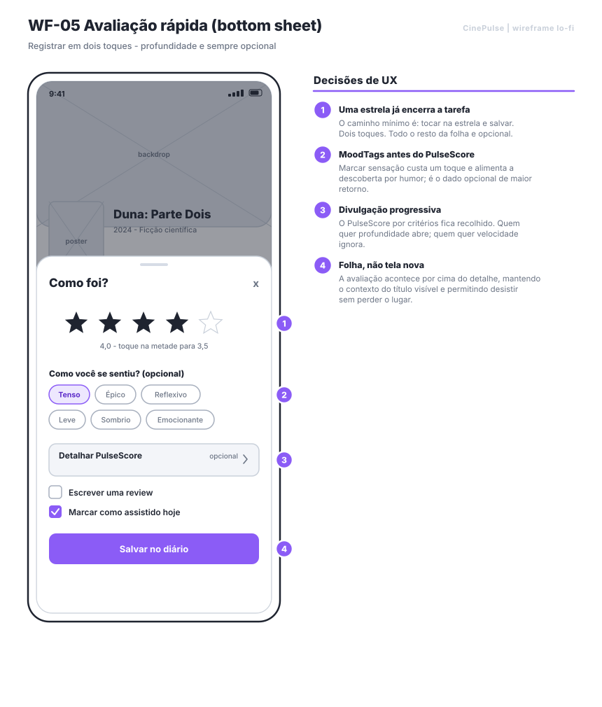
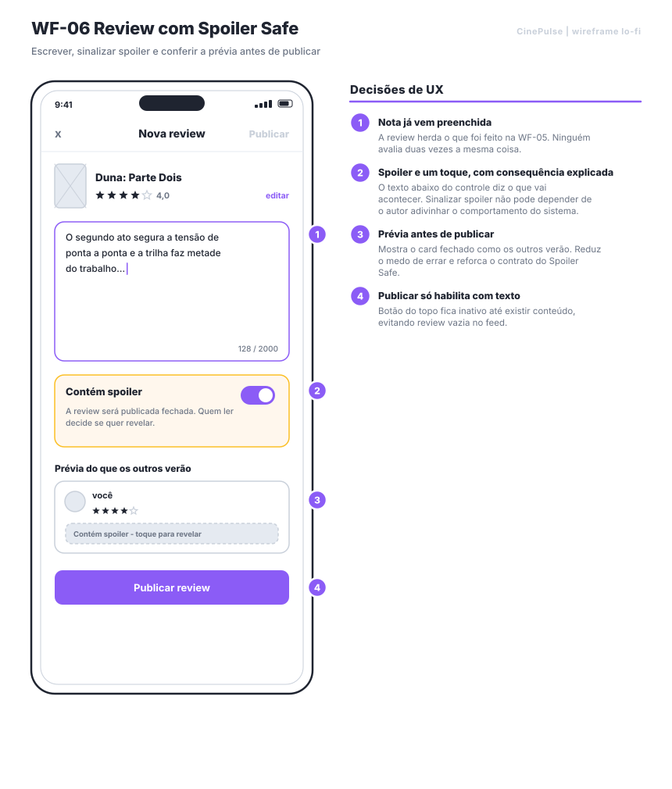
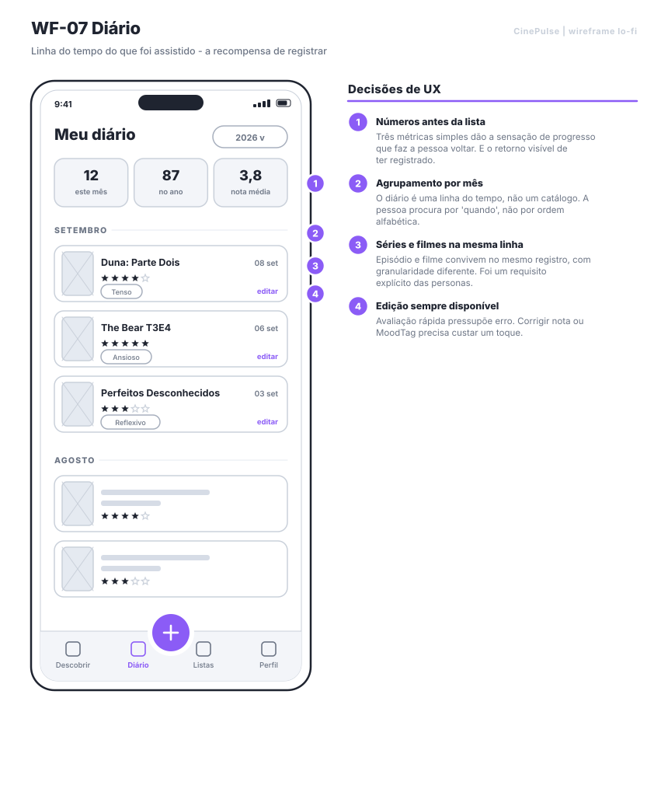
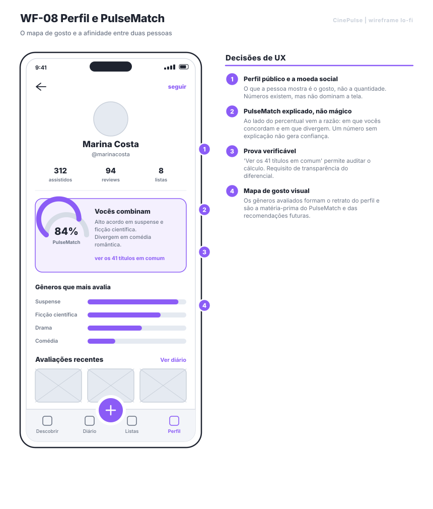
11 — Estados de tela
Um fluxo só está especificado quando o caminho infeliz também está
É o artefato que costuma faltar em trabalho acadêmico — e o primeiro que quebra no app real.
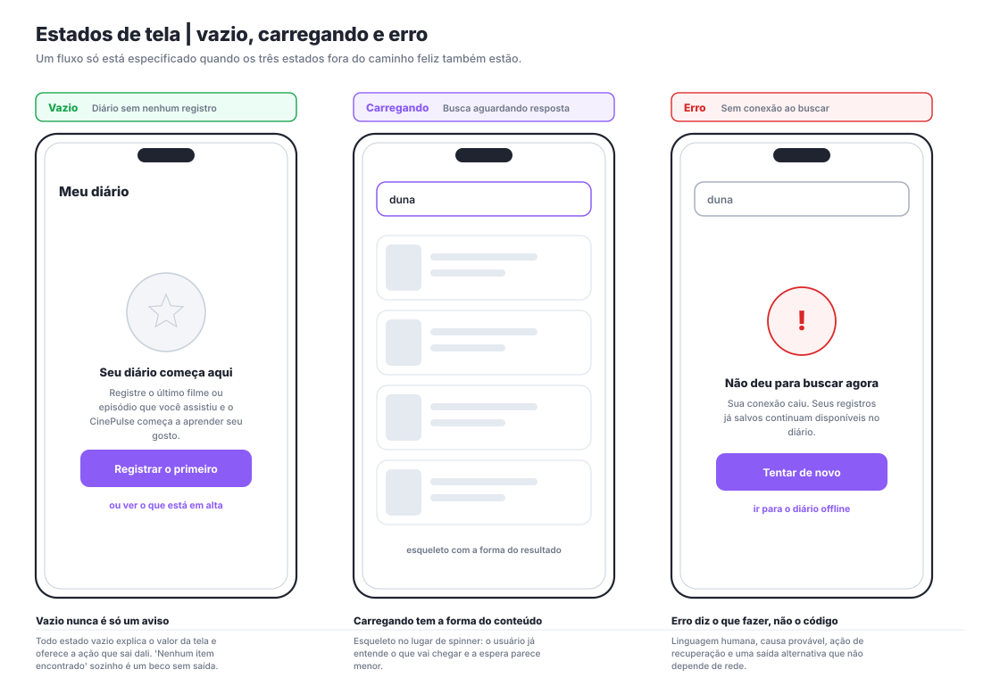
Explica o valor da tela e oferece a ação que sai dali. "Nenhum item encontrado" sozinho é um beco sem saída.
Esqueleto com a forma do conteúdo, não spinner. A pessoa já entende o que vai chegar e a espera parece menor.
Linguagem humana, causa provável, ação de recuperação e uma saída alternativa que não depende de rede.
12 — Próximo passo
O plano de validação está pronto para rodar
Questionário, roteiro de entrevista e teste de usabilidade já escritos em docs/10-pesquisa-e-validacao.md. Cinco participantes bem conduzidos revelam a maior parte dos problemas graves de usabilidade — para prazo acadêmico, valem mais do que trinta respostas de formulário.
Teste de usabilidade sobre o protótipo app_interativo.html
| # | Tarefa dita ao participante | Mede | Sucesso |
|---|---|---|---|
| 1 | "Registre o último filme ou série que você assistiu, com a nota que você daria." | meta dos 20 s e H3 | concluída sozinho em ≤ 20 s; anotar se abriu o PulseScore |
| 2 | "É sexta à noite e você quer algo leve. Encontre uma opção." | H5 | usou o filtro por humor sem ser instruído |
| 3 | "Você quer comentar o final sem estragar para quem não viu. Faça isso." | H6 | ativou o controle de spoiler sem ajuda |
| 4 | "A Marina recomendou um filme. Vale a pena confiar?" | H4 | encontrou e interpretou o PulseMatch corretamente |
Uma hipótese falseada gera mudança documentada de escopo, não uma nota de rodapé. Todo problema de gravidade 3 no teste vira item obrigatório de backlog no CP5. Enquanto a seção de resultados não existir, tudo neste repositório sobre comportamento de usuário deve ser lido como hipótese.
Documentação completa
- 01 — Visão do produto · problema, hipóteses, benchmark, posicionamento e métricas
- 02 — Público, personas e jornada · segmentação, três personas, antipersona e mapa de jornada
- 03 — MVP e requisitos · 20 user stories com critérios de aceite, RICE, MoSCoW e requisitos não funcionais
- 06 — Wireframes e fluxos · arquitetura, fluxo, 12 wireframes e rastreabilidade
- 10 — Pesquisa e validação · questionário, roteiro de entrevista e teste de usabilidade